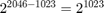
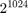
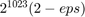

FLOATING POINT DEMO
Shows several MATLAB floating point facilities such as: overflow,underflow, cancellation, machine epsilon, special quantities IEEE standard
Contents
Floating Point Demo
format long format compact
Overflow/underflow
1 -1
ans =
1
ans =
-1
1e100 1e-100
ans =
1.000000000000000e+100
ans =
1.000000000000000e-100
1e400 1e-400
ans =
Inf
ans =
0
Cancellation
x=rand y=rand z=x-y
x = 0.957506835434298 y = 0.964888535199277 z = -0.007381699764979
x1=x+1e10 y1=y+1e10 z1=x1-y1 z1-z
x1 =
1.000000000095751e+10
y1 =
1.000000000096489e+10
z1 =
-0.007381439208984
ans =
2.605559945578761e-07
Epsilon
1+1e-20 (1+1e-20)-1
ans =
1
ans =
0
1+1e-16 1+2e-16 (1+2e-16)-1
ans =
1
ans =
1.000000000000000
ans =
2.220446049250313e-16
e=1; while (1+e>1) e=e/2, end % Don't optimize! eps
e =
0.500000000000000
e =
0.250000000000000
e =
0.125000000000000
e =
0.062500000000000
e =
0.031250000000000
e =
0.015625000000000
e =
0.007812500000000
e =
0.003906250000000
e =
0.001953125000000
e =
9.765625000000000e-04
e =
4.882812500000000e-04
e =
2.441406250000000e-04
e =
1.220703125000000e-04
e =
6.103515625000000e-05
e =
3.051757812500000e-05
e =
1.525878906250000e-05
e =
7.629394531250000e-06
e =
3.814697265625000e-06
e =
1.907348632812500e-06
e =
9.536743164062500e-07
e =
4.768371582031250e-07
e =
2.384185791015625e-07
e =
1.192092895507813e-07
e =
5.960464477539063e-08
e =
2.980232238769531e-08
e =
1.490116119384766e-08
e =
7.450580596923828e-09
e =
3.725290298461914e-09
e =
1.862645149230957e-09
e =
9.313225746154785e-10
e =
4.656612873077393e-10
e =
2.328306436538696e-10
e =
1.164153218269348e-10
e =
5.820766091346741e-11
e =
2.910383045673370e-11
e =
1.455191522836685e-11
e =
7.275957614183426e-12
e =
3.637978807091713e-12
e =
1.818989403545856e-12
e =
9.094947017729282e-13
e =
4.547473508864641e-13
e =
2.273736754432321e-13
e =
1.136868377216160e-13
e =
5.684341886080801e-14
e =
2.842170943040401e-14
e =
1.421085471520200e-14
e =
7.105427357601002e-15
e =
3.552713678800501e-15
e =
1.776356839400250e-15
e =
8.881784197001252e-16
e =
4.440892098500626e-16
e =
2.220446049250313e-16
e =
1.110223024625157e-16
ans =
2.220446049250313e-16
b=2^50 (b+e*b)-b
b =
1.125899906842624e+15
ans =
0
realmin and realmax
realmin realmax
ans =
2.225073858507201e-308
ans =
1.797693134862316e+308
Signed zeros
0 +0 -0
ans =
0
ans =
0
ans =
0
Infinity
1/0 -1/0 0/0
ans = Inf ans = -Inf ans = NaN
inf 1/inf -1/inf -1/-inf 2*inf inf+inf inf^inf
ans =
Inf
ans =
0
ans =
0
ans =
0
ans =
Inf
ans =
Inf
ans =
Inf
NaN
inf-inf inf/inf 0/0 nan+123
ans = NaN ans = NaN ans = NaN ans = NaN
Check for NaN
x=nan; isnan(x) x==x isnan([1,2,3,nan,inf]) isinf([1,2,3,nan,inf])
ans = logical 1 ans = logical 0 ans = 1×5 logical array 0 0 0 1 0 ans = 1×5 logical array 0 0 0 0 1
Round to even
e=eps/2 1+e 1+2*e ((1+2*e)-1)/e ((1+3*e)-1)/e ((1+4*e)-1)/e [0:16; ((1+(0:16)*e)-1)/e]'
e =
1.110223024625157e-16
ans =
1
ans =
1.000000000000000
ans =
2
ans =
4
ans =
4
ans =
0 0
1 0
2 2
3 4
4 4
5 4
6 6
7 8
8 8
9 8
10 10
11 12
12 12
13 12
14 14
15 16
16 16
View hex/bin representations
format hex
0
-0
inf
-inf
nan
-nan
123123+nan
1
2
(1:10)'
realmin
realmax
eps
ans = 0000000000000000 ans = 8000000000000000 ans = 7ff0000000000000 ans = fff0000000000000 ans = fff8000000000000 ans = 7ff8000000000000 ans = fff8000000000000 ans = 3ff0000000000000 ans = 4000000000000000 ans = 3ff0000000000000 4000000000000000 4008000000000000 4010000000000000 4014000000000000 4018000000000000 401c000000000000 4020000000000000 4022000000000000 4024000000000000 ans = 0010000000000000 ans = 7fefffffffffffff ans = 3cb0000000000000
Representation - short
xs=[0,-0,inf,-inf,nan,-nan,1:10,1+(0:10)*2^-23,2-(10:-1:0)*2^-23]; format short for x=xs fprintf('%10.8g %s\n',x,num2bin(single(x),true)); %pause end
0 0 00000000 00000000000000000000000
-0 1 00000000 00000000000000000000000
Inf 0 11111111 00000000000000000000000
-Inf 1 11111111 00000000000000000000000
NaN 1 11111111 10000000000000000000000
NaN 0 11111111 10000000000000000000000
1 0 01111111 00000000000000000000000
2 0 10000000 00000000000000000000000
3 0 10000000 10000000000000000000000
4 0 10000001 00000000000000000000000
5 0 10000001 01000000000000000000000
6 0 10000001 10000000000000000000000
7 0 10000001 11000000000000000000000
8 0 10000010 00000000000000000000000
9 0 10000010 00100000000000000000000
10 0 10000010 01000000000000000000000
1 0 01111111 00000000000000000000000
1.0000001 0 01111111 00000000000000000000001
1.0000002 0 01111111 00000000000000000000010
1.0000004 0 01111111 00000000000000000000011
1.0000005 0 01111111 00000000000000000000100
1.0000006 0 01111111 00000000000000000000101
1.0000007 0 01111111 00000000000000000000110
1.0000008 0 01111111 00000000000000000000111
1.000001 0 01111111 00000000000000000001000
1.0000011 0 01111111 00000000000000000001001
1.0000012 0 01111111 00000000000000000001010
1.9999988 0 01111111 11111111111111111110110
1.9999989 0 01111111 11111111111111111110111
1.999999 0 01111111 11111111111111111111000
1.9999992 0 01111111 11111111111111111111001
1.9999993 0 01111111 11111111111111111111010
1.9999994 0 01111111 11111111111111111111011
1.9999995 0 01111111 11111111111111111111100
1.9999996 0 01111111 11111111111111111111101
1.9999998 0 01111111 11111111111111111111110
1.9999999 0 01111111 11111111111111111111111
2 0 10000000 00000000000000000000000
Representation - long
xs=[0,-0,inf,-inf,nan,-nan,1:10,1+(0:10)*2^-23,2-(10:-1:0)*2^-23]; format short for x=xs fprintf('%10.8g %s\n',x,num2bin(x,true)); %pause end
0 0 00000000000 0000000000000000000000000000000000000000000000000000
-0 1 00000000000 0000000000000000000000000000000000000000000000000000
Inf 0 11111111111 0000000000000000000000000000000000000000000000000000
-Inf 1 11111111111 0000000000000000000000000000000000000000000000000000
NaN 1 11111111111 1000000000000000000000000000000000000000000000000000
NaN 0 11111111111 1000000000000000000000000000000000000000000000000000
1 0 01111111111 0000000000000000000000000000000000000000000000000000
2 0 10000000000 0000000000000000000000000000000000000000000000000000
3 0 10000000000 1000000000000000000000000000000000000000000000000000
4 0 10000000001 0000000000000000000000000000000000000000000000000000
5 0 10000000001 0100000000000000000000000000000000000000000000000000
6 0 10000000001 1000000000000000000000000000000000000000000000000000
7 0 10000000001 1100000000000000000000000000000000000000000000000000
8 0 10000000010 0000000000000000000000000000000000000000000000000000
9 0 10000000010 0010000000000000000000000000000000000000000000000000
10 0 10000000010 0100000000000000000000000000000000000000000000000000
1 0 01111111111 0000000000000000000000000000000000000000000000000000
1.0000001 0 01111111111 0000000000000000000000100000000000000000000000000000
1.0000002 0 01111111111 0000000000000000000001000000000000000000000000000000
1.0000004 0 01111111111 0000000000000000000001100000000000000000000000000000
1.0000005 0 01111111111 0000000000000000000010000000000000000000000000000000
1.0000006 0 01111111111 0000000000000000000010100000000000000000000000000000
1.0000007 0 01111111111 0000000000000000000011000000000000000000000000000000
1.0000008 0 01111111111 0000000000000000000011100000000000000000000000000000
1.000001 0 01111111111 0000000000000000000100000000000000000000000000000000
1.0000011 0 01111111111 0000000000000000000100100000000000000000000000000000
1.0000012 0 01111111111 0000000000000000000101000000000000000000000000000000
1.9999988 0 01111111111 1111111111111111111011000000000000000000000000000000
1.9999989 0 01111111111 1111111111111111111011100000000000000000000000000000
1.999999 0 01111111111 1111111111111111111100000000000000000000000000000000
1.9999992 0 01111111111 1111111111111111111100100000000000000000000000000000
1.9999993 0 01111111111 1111111111111111111101000000000000000000000000000000
1.9999994 0 01111111111 1111111111111111111101100000000000000000000000000000
1.9999995 0 01111111111 1111111111111111111110000000000000000000000000000000
1.9999996 0 01111111111 1111111111111111111110100000000000000000000000000000
1.9999998 0 01111111111 1111111111111111111111000000000000000000000000000000
1.9999999 0 01111111111 1111111111111111111111100000000000000000000000000000
2 0 10000000000 0000000000000000000000000000000000000000000000000000
Contradiction?
format long
realmax
log2(ans)
2^1024
ans =
1.797693134862316e+308
ans =
1024
ans =
Inf
Explanation
This looks like a contradiction at first glance, since the largest exponent should be  according the IEEE conventions. But realmax is the number with the largest possible exponent and with the semnificant F consisting of all ones:
format hex
realmax
ans = 7fefffffffffffff
Even though Matlab reports log2(realmax)=1024 , realmax does not equal , but rather ; taking the logarithm of realmax yields 1024 only because of rounding. Similar rounding effects would also occur for machine numbers that are a bit smaller than realmax .